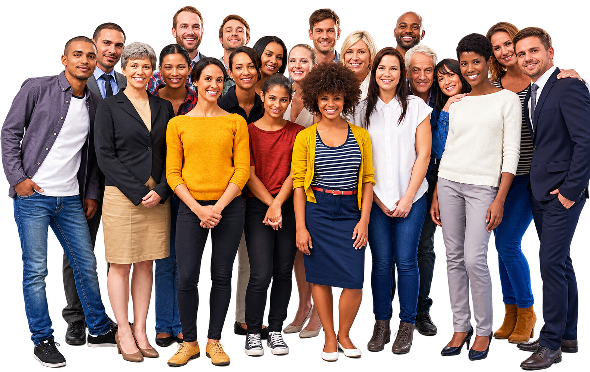

Na Baron Transportes, acreditamos que uma empresa é formada, antes de tudo, por pessoas. Por trás de cada operação, cada viagem e cada entrega, existe uma equipe comprometida em fazer o trabalho acontecer. Valorizamos profissionais que compartilham nossos princípios de responsabilidade, respeito, ética e compromisso com a qualidade.
Nossa equipe é formada por pessoas com diferentes histórias, experiências, conhecimentos e perspectivas. Para nós, a diversidade é uma força que contribui para um ambiente mais rico, colaborativo e preparado para enfrentar os desafios do dia a dia. Respeitamos as diferenças e buscamos construir um espaço onde todos possam trabalhar com dignidade, segurança e igualdade de oportunidades.
O profissionalismo está presente em cada etapa das nossas operações. Incentivamos nossos colaboradores e parceiros a atuarem com responsabilidade, organização, respeito e atenção aos detalhes, sempre buscando a excelência no atendimento e na execução de cada serviço. Sabemos que a qualidade do nosso trabalho depende diretamente do comprometimento de cada pessoa que faz parte da Baron.
Também acreditamos que bons resultados são construídos por meio da colaboração. Por isso, valorizamos o diálogo, o trabalho em equipe, a troca de experiências e o desenvolvimento profissional. Buscamos aprender continuamente, aprimorar nossos processos e oferecer condições para que nossa equipe possa crescer junto com a empresa.
Mais do que transportar cargas, transportamos confiança. E essa confiança começa dentro da nossa própria equipe. É por meio do respeito, da união, da responsabilidade e do compromisso de cada profissional que conseguimos entregar aos nossos clientes segurança, eficiência e tranquilidade em cada operação. Na Baron Transportes, cada pessoa faz parte do caminho que nos leva mais longe.

Araçariguama (Matriz)
Avenida Nossa Senhora da Penha, 550
CEP: 18148-000 - Ronda
Araçariguama – SP
Telefone: 11 99465-7856
© 2026 Baron Transportes - Todos os direitos reservados.
Desenvolvido por Fellype Amorim